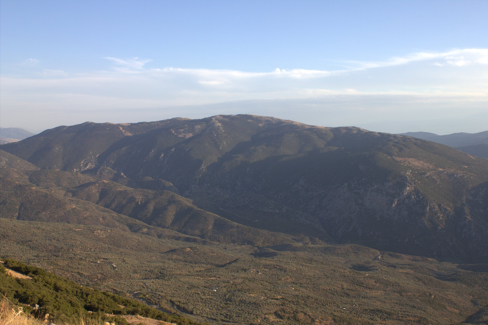
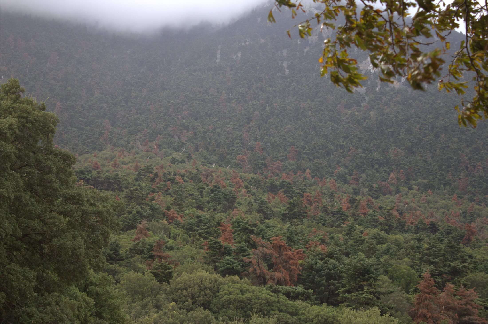

Λίγα βουνά στην Ελλάδα—ή και οπουδήποτε αλλού—εκπέμπουν τέτοια ακατανίκητη ενέργεια. Εδώ, στις νοτιοδυτικές πλαγιές, ιδρύθηκε στην αρχαιότητα το Ιερό Μαντείο των Δελφών, αφιερωμένο στον Απόλλωνα ο οποίος κατά τη μυθολογία ζούσε στον Παρνασσό και έβοσκε στα λιβάδια του βουνού τα βόδια του. Εκεί τον πλησίασαν οι Θριές προκειμένου να του διδάξουν την τέχνη της Μαντικής.
Από το Ζεμενό στην κοσμοπολίτικη Αράχωβα
Το ταξίδι μας ξεκινά από το ελατοσκέπαστο Ζεμενό, διασχίζοντας την κοσμοπολίτικη Αράχωβα—τη «Μύκονο του Χειμώνα»—όπου η παράδοση φλερτάρει με τη σύγχρονη ζωντάνια. Κατευθυνόμενοι προς το διάσελο, το βλέμμα χάνεται ανάμεσα στους αρχαίους Δελφούς και τον γαλάζιο κόλπο της Ιτέας που απλώνεται χαμηλά.
Φτάνοντας στο οροπέδιο όπου βρίσκεται το διάσημο χιονοδρομικό κέντρο, το τοπίο αλλάζει δραματικά. Αλλά το πραγματικό ταξίδι συνεχίζεται πέρα από τις πίστες, στην Ανατολική πλευρά του Παρνασσού—εκεί όπου η φύση μιλάει με τη δική της γλώσσα.
Στα μαγευτικά χωριά του Παρνασσού, όπως η Αγόριανη (Επτάλοφος), ο χρόνος κυλά διαφορετικά. Εδώ, το σκηνικό μιας από τις πιο κλασσικές ταινίες του ελληνικού κινηματογράφου—ο «Αγαπητικός της Βοσκοπούλας»—ζωντανεύει ακόμα στα πετρόκτιστα σπίτια και τα πλακόστρωτα μονοπάτια.
.jpg)
Η αυθεντικότητα ζει ακόμα στον Παρνασσό!
Κατεβαίνοντας στο γραφικό Πολύδροσο (την παλιά Σουβάλα), βρίσκεις ζωντάνια και αυθεντικότητα. Τα σοκάκια της Άνω και Κάτω Σουβάλας ξυπνούν τις παλιές θύμησες ενώ η ζεστασιά και αυθεντικότητα των ντόπιων σε κάνει να αισθάνεσαι αμέσως σαν στο σπίτι σου. Τα χωριά είναι πολλά και δεν μπορούν να χωρέσουν σε ένα αρθρο. Θέλει πολλές σελίδες για να αποτυπώσεις τις εικόνες με λέξεις που να βγάζουν νόημα. Επιπλέον, τι να πρωτογράψεις για χωριά όπως η Βάργιανη από την πλευρά της Γκιώνας, την Αμφίκλεια σημαντική κωμόπολη στην καρδιά του Παρνασσού, αλλά και την Άνω Τιθορέα στην χαράδρα της Βέλιτσας σε υψόμετρο 400 μ. από όπου ξεκινάνε και οι κλασσικές αναβάσεις προς τη Λιάκουρα.
Περί Φύσης
Ο Παρνασσός είναι σαν βιβλίο με δύο τόμους, γραμμένο από διαφορετικά μητρικά πετρώματα: Ανα τολικά όπου ο ασβεστόλιθος σκαλίζει απότομες κορυφές και άγρια καρστικά τοπία και δυτικά ο φλύσχης διαμορφώνει απαλότερες πλαγιές και πλουσιότερη βλάστηση.
Ανεβαίνοντας από τις βελανιδιές της πεδιάδας του Κηφισσού, διασχίζουμε διαδοχικούς τύπους βλάστησης:
- Χαμηλά Υψόμετρα: Οι θαμνώνες με πουρνάρια, σχίνους, φυλίκια, Χαρουπιές κ.α.
- Μεσαίες Ζώνες: Τα εντυπωσιακά μαλόκεδρα ξεκινάνε από χαμηλά αλλά φτάνουν ακόμα και στα 1.400 μ. μαζί με την ελάτη. Επίσης υπάρχουν μαυρόπευκα ιδιαίτερα πάνω από την Αμφίκλεια και το Άνω και Κάτω Πολύδροσο.
- Μεγάλα Ύψη: Επιβλητικά έλατα που κυριαρχούν στο τοπίο.
Και φυσικά στα ξέφωτα και στους βράχους μπορεί κανείς να εντοπίσει την σπάνια Παιώνια του Παρνασσού η οποία έχει χαρακτηριστεί ως Τρωτό (VU) στο βιβλίο Ερυθρών Δεδομένων των Σπάνιων & Απειλούμενων Φυτών της Ελλάδας και απαντάται σε δολίνες και ιδιαίτερα επικλινή εδάφη σε υψόμετρα έως και 1.800 μ. Εκτός από τις παιώνιες υπάρχουν πάμπολλα σπάνια είδη φυτών όπως Campanula topaliana subsp. delphica, Centaurea musarum, Erysimum parnassi και πολλά άλλα.

Ένα Ανησυχητικό Φαινόμενο
Τα ξηρά έλατα στον Παρνασσό πληθαίνουν ανησυχητικά. Το φαινόμενο δεν είναι ελληνικό καθώς τα έλατα και σε πολλές της Ευρώπης δυσκολεύονται αισθητά. Από τη Ροδόπη μέχρι την Πελοπόννησο, κόκκινοι σκελετοί δέντρων μαρτυρούν τις επιπτώσεις της κλιματικής αλλαγής που δεν μπορούμε πια να αγνοούμε.
Οι επιστήμονες έχουν επισημάνει ότι υπάρχει συσχέτιση ιδιαίτερα με εκτεταμένες ξηρασίες και μικρότερες διάρκειες βροχοπτώσεων. Στα μεσαία υψόμετρα, το φαινόμενο είναι ιδιαίτερα έντονο. Στις υψηλότερες ζώνες τα έλατα έχουν μεγαλύτερη προσαρμοστικότητα και αντιστέκονται ακόμα. Αλλά το φαινόμενο πρέπει να μας ανησυχήσει και να φτάσει στην πολιτεία.
Σε συνδυασμό με τις πυρκαγιές σε ελατοδάση όπως στην τεράστια καταστροφή στον Φενεό Κορινθίας, η εκτεταμένη νέκρωση της ελάτης μπορεί να δημιουργήσει εξαιρετικά επικίνδυνες συνθήκες έναρξης πυρκαγιάς σε ελατοδάση τεράστιας οικολογικής αξίας. Ας μην ξεχνάμε ότι η κεφαλληνιακή ελάτη είναι ενδημίτης της Ελλάδας και αποτελεί το νοτιότερο όριο εξάπλωσης του είδους, γεγονός το οποίο μεγεθύνει δραματικά την ευθύνη που έχουμε να το προστατεύσουμε.

Από τη γνώση στη δράση
Το ελληνικό τοπίο δεν είναι μόνο γαλαζοπράσινα νερά. Είναι και τα βουνά μας—επιβλητικά, μυστηριώδη, ζωτικής σημασίας. Αν θέλουμε να συνεχίσουμε να τα πεζοπορούμε, να τα θαυμάζουμε και να εμπνεόμαστε από αυτά, πρέπει πρώτα να τα «γνωρίσουμε» να μάθουμε περισσότερα πράγματα για τη ζωή στα βουνά, τις δυσκολίες και τις αντιξοότητες που αντιμετωπίζουν οι κατοικοι των ορεινών οικισμών, τα παλιά επαγγέλματα τα οποία εξαφανίστηκαν με την άφιξη της κακώς εννοούμενης ανάπτυξης και των αρνητικών επιπτώσεων του τουρισμού και φυσικά τρόπους και πρακτικές για να υποστηρίξουμε έμπρακτα και ουσιαστικά. Τα βουνά μας δεν είναι μόνο για να τα απολαμβάνουμε ως κάτοικοι μιας εξαιρετικά πυκνοκατοικημένης μεγαλούπολης, η οποία όλο και περισσότερο στρεσάρει τους πολίτες. Ο Παρνασσός, όπως και όλα τα βουνά στην Ελλάδα έχουν τεράστια γεωολογική, χλωριδική, δασική, κλιματική και πολιτιστική ιστορία ακριβώς γιατί ήταν, είναι και θα είναι εκεί πριν από εμάς. Το θέμα είναι να μαθαίνουμε περισσότερα πράγματα για να μπορούμε να τα «καταλάβουμε» καλύτερα. Μόνο μέσα από τη γνώση και την εμπειρία θα τα «καταλάβουμε»—και μόνο τότε θα αναπτύξουμε τους σωστούς τρόπους διαχείρισης και προστασίας.